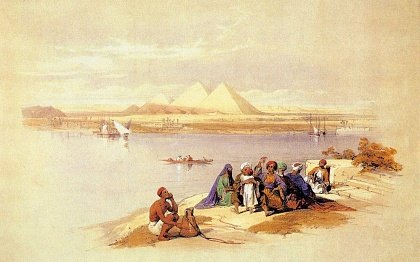
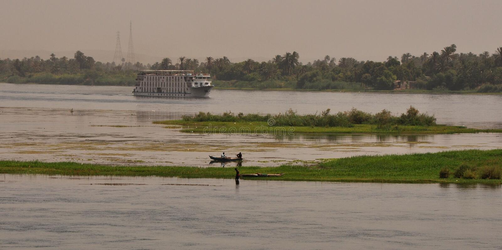
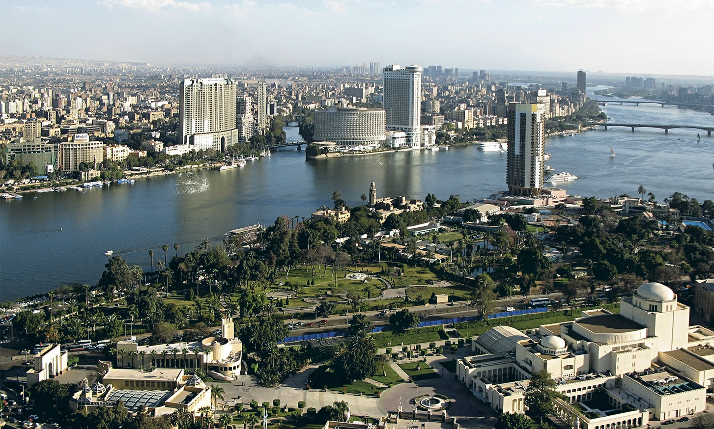
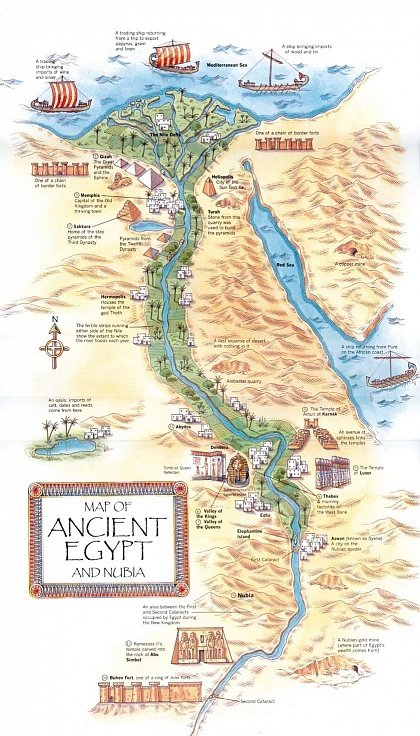
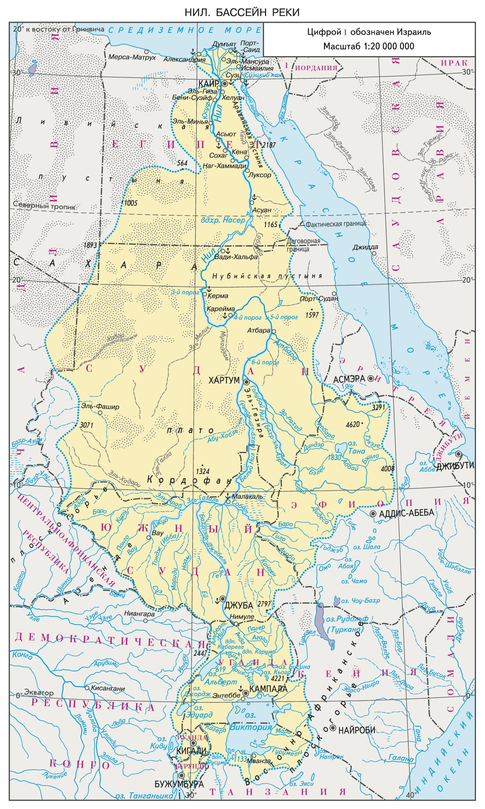
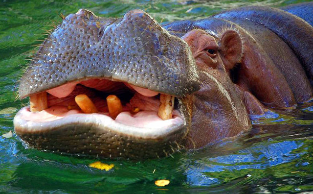
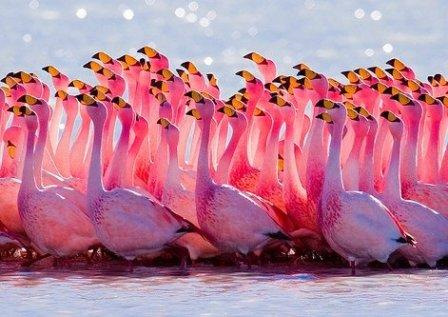
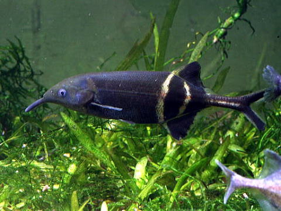
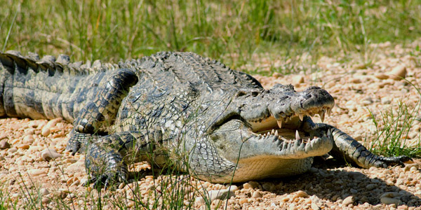
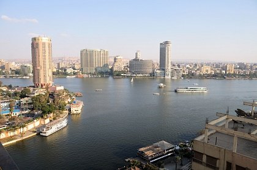

Река Нил

Содержание
Исторические сведения
Нил-река в Африке, одна из величайших по протяжённости речных систем в мире,он упоминается в источниках, которые описывают период становления цивилизации. Тогда водный поток называли древнегреческим словом «Нейлос» – именно от него и происходит современное название. Можно встретить наименование «Эгиптос», скорее всего «Египет» является его производной. В древние времена люди стались наладить взаимоотношения с природой, чтобы избежать засухи, наводнения или нападения животных. Египтяне считали, что в глубинах Нила обитает бог Себек. В его честь строили храмы и старались всячески задобрить жертвоприношениями. Трудно переоценить роль Нила в развитии древнеегипетской цивилизации. Река и по сей день служит источником воды для всего континента, а также имеет разнообразную флору и фауну. Водные ресурсы применяются для полива полей, работы систем водоснабжения и курсирования кораблей. Большое количество ила, остающегося на земле после выхода реки из берегов, является полезным природным удобрением. До сих пор ведутся споры относительно названия потока. Оно имеет греческие и африканские (смесь семитских и ливийских языков) корни. Скорее всего, имя Нил дословно трактуется как «речная долина». Древние египтяне чтили покровителя Нила Хапи. Ежегодно устраивали празднования в его честь, сопровождаемые ритуалами и приношением жертв. Цель — задобрить божество, получить в награду богатый урожай.

Исток И Притоки Нила
С Античных Времен Ученые Пытаются Выяснить, Каким Образом Река Наполняется Водой. По Этому Поводу Возникало Огромное Количество Догадок, Но Ни Одна Не Является Стопроцентно Правильной. Длительное Время В Искусстве Нил Имел Образ Некого Божества С Замотанной Головой, Что Являлось Символом Незнания. На Данный Момент Не Существует Единой Точки Зрения Касательно Истоков Реки, Установлено Только, Что Водный Поток Берет Начало На Восточно-Африканском Плоскогорье И Впадает В Море. Его Полноводность Обеспечивается Многочисленными Притоками, Важнейшими Из Которых Являются Голубой И Белый Нил. Они Так Названы Из-За Оттенка Воды, Которая Окрашивается Находящимися В Ней Глинистыми Взвесями. Нил Меняет Свой Цвет В Сезон Разливов – Он Бывает Красным Или Зеленым. Это Происходит Из-За Наличия В Воде Горных Минералов И Тропических Растений.
Бассейн И Долина Нила
В бассейне Нила расположено большое количество государств, таких как: Египет, Кения, Эфиопия, Судан, Танзания, Уганда. Пятая часть русла реки приходится на египетские территории, оставшиеся воды распределены между другими странами. В долине водного потока расположены все города Египта, поэтому Нил традиционно ассоциируют именно с этим государством. Близлежащая местность представляет собой своеобразный туристический оазис. Это настоящая находка для ценителей истории и археологии. Рядом с Нилом находятся известнейшие памятники культуры – пирамиды Гизы, Долина царей, Египетский музей в Каире, Луксорский и Карнакский храм, Большой сфинкс. Возле Каира начинается дельта Нила, протяженность которой составляет 260 км вдоль побережья Средиземного моря. Устье реки получило такое название из-за визуальной схожести с буквой греческого алфавита. Здесь заканчивается долина Нила и он впадает в средиземное море. Начало дельты и нильские пороги ограничивают область Верхнего Египта – местности, где сосредоточены древние памятники, возведенные во времена эпохи Среднего Царства и в римско-византийский период. В городе Ком-Омбо вы увидите многочисленные мумии священных крокодилов. Абидос известен как центр поклонения богу умерших Осирису. Как мусульмане стремятся совершить хадж в Мекку, а христиане – паломничество в Иерусалим, так и древние египтяне хотели побывать в Абидосе при жизни или просили похоронить их здесь. Небогатые люди, не имеющие возможности построить гробницу в данном месте, возили сюда мумии умерших родственников на поклонение. Немного выше по течению Нила можно увидеть гробницы Бени-Хасана и некрополь в Туна-эль-Гебель. Здесь сохранился храм Спеос Артемидос, созданный в честь богини-львицы Сехмет. Неподалеку от Сохага вас ждут уединенные Красный и Белый монастыри, в которых вы сможете проникнуться аскетичной атмосферой и способом жизни первобытных христиан.
Флора И Фауна
Животный мир Нила достаточно разнообразен.По обоим берегам Нила и вдоль его притока Семлика живет большое количество дичи. В этих местах, по-видимому, сосредоточена самая большая биомасса в мире. Этому способствуют обильные осадки, поддерживающие активный рост растительности, и то, что большинство диких животных — представители крупных видов: слоны, буйволы, бегемоты. Бегемоты живут в воде или вблизи нее, но пасутся на суше, часто в нескольких километрах от реки, поэтому их тоже приходится включать в наземную биомассу. Один слон соответствует биомассе пятидесяти бубалов конгони, один буйвол — пятнадцати коб. Если бы здесь не было обильной растительности, то подобное количество крупных животных не могло бы существовать. Рядом с ними живет большое число животных средних размеров: топи, коричнево-красные антилопы и водяные козлы. В Уганде, в бассейне Верхнего Нила, были созданы два национальных парка (национальный парк Кабарега у водопада того же названия и национальный парк Рувензори). В настоящее время в обоих национальных парках обитают около 26 тысяч слонов, 12 тысяч бегемотов и 20 тысяч буйволов. Большие охраняемые стада быстро размножаются. Они, как правило, не пересекают границ национальных парков, потому что появление в населенных областях означало бы для них гибель.

Круизы по Нилу
Путешествия по Нилу были популярны среди туристов еще в XIX веке. Круиз совершается на специальном лайнере на отрезке от Луксора до Асуана, общая протяженность маршрута составляет около 220 км. Во время поездки судно останавливается в нескольких городках, где проходят экскурсии по остаткам храмов. Исторические населенные пункты, расположенные на Ниле – Асуан и Абу Симбел, Карнак и Луксор, Каир и Абидос. Вы можете насладиться не только познавательной программой, но и размеренным отдыхом на борту. Путешествие длится 4-5 суток, в стоимость путевки включено трехразовое питание, билеты для посещения достопримечательностей и трансфер на автобусе до места отправки лайнера. Стоимость круиза отличается в зависимости от места приобретения путевки. Её можно купить в российской турфирме, в местном агентстве или у гида при отеле. При обращении в туристические компании Луксора и Хургады вы получаете возможность сэкономить около 200 долларов. Стоит учесть, что в этом случае оплата пропавших дней в отеле вам не будет компенсирована со стороны российского оператора.